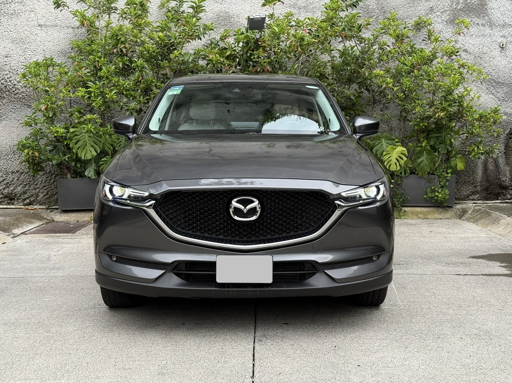
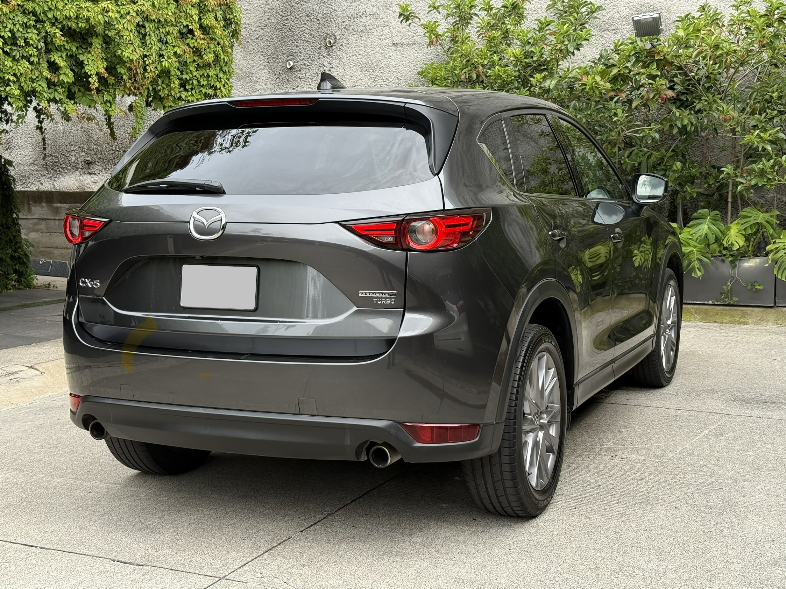
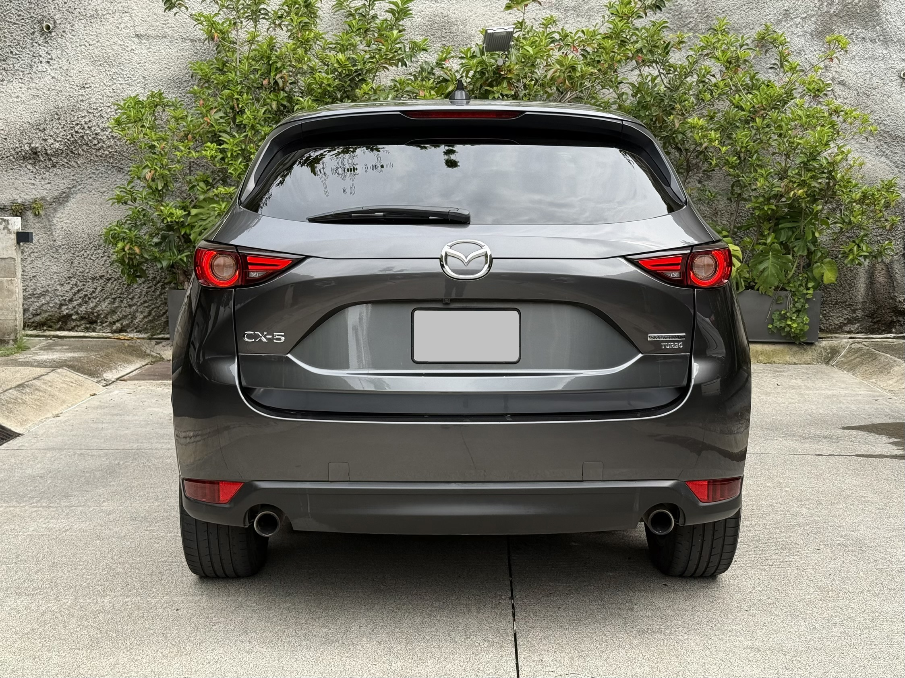
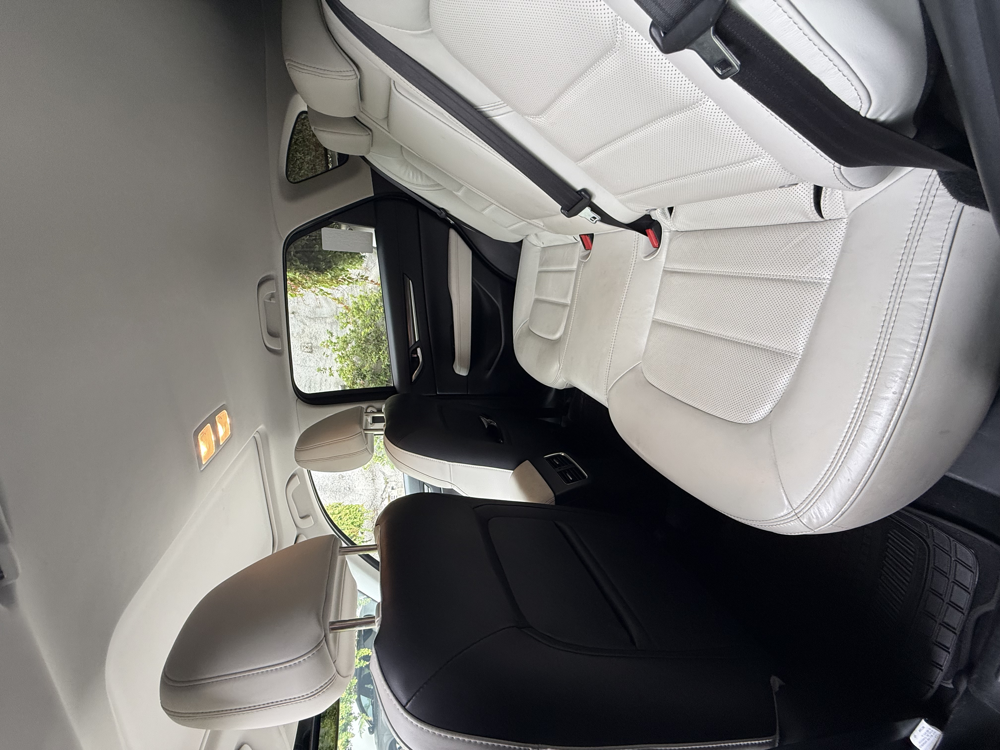
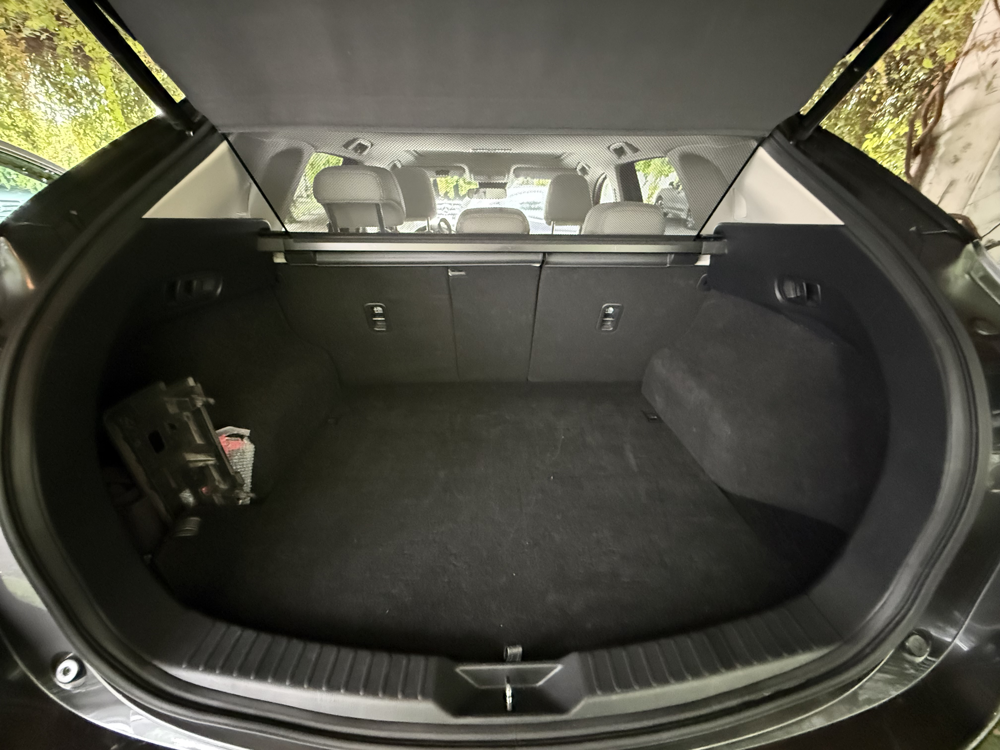
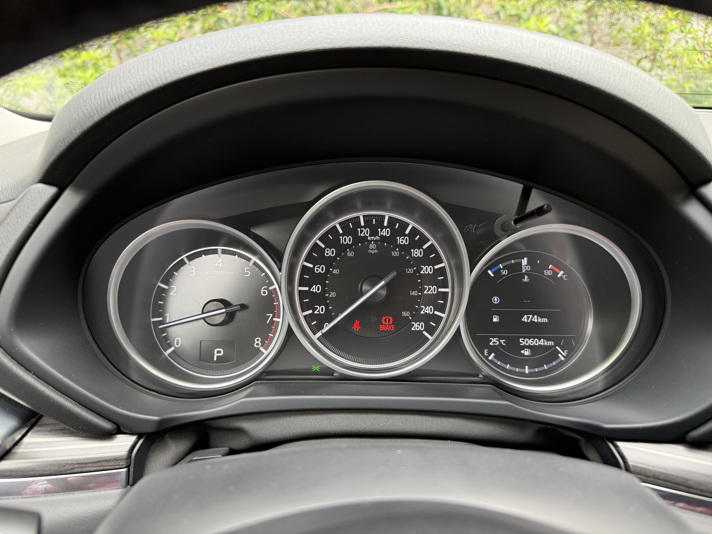

Datos rápidos
Información clave
Características
Equipamiento destacado
Lo más interesante de esta CX-5 Signature está visible de inmediato. Si quieres revisar todo el equipo, despliega la lista completa.
Ver lista completa de características y equipamiento
Versión: Signature
Tracción: 2WD
Exterior: Gris titanio
Interior: piel arena
- Aire acondicionado con control automático de temperatura independiente de dos zonas.
- Apple CarPlay™ inalámbrico y Android Auto™.
- Asiento eléctrico del conductor con ajuste de 8 posiciones.
- Bolsas de aire frontales, laterales y laterales tipo cortina.
- Botón de encendido automático.
- Botón modo sport.
- Cámara de visión trasera.
- Control dinámico de estabilidad (DSC) y sistema de control de tracción (TCS).
- Control de velocidad crucero.
- Cubierta para área de carga.
- Display de información frontal (ADD).
- Espejo retrovisor electrocrómico.
- Espejos de vanidad iluminados con cubierta para conductor y copiloto.
- Faros de niebla LED.
- Faros LED dirigibles (AFLS) con función de encendido y apagado automático.
- Freno de mano eléctrico (EPB) con auto hold.
- Frenos con ABS, asistencia de frenado (BA) y distribución electrónica de fuerza de frenado (EBD).
- Mazda Connect™ con sistema de audio BOSE® HD AM/FM, 10 bocinas, control central de mando (HMI), pantalla a color de 8", controles de audio al volante, Bluetooth® manos libres y entrada USB.
- Limpiaparabrisas con sensor de lluvia.
- Llave inteligente.
- Luces de marcha diurna (DRL).
- Puerta trasera con apertura y cierre eléctrico.
- Quemacocos.
- Rines de aleación de aluminio de 19".
- Sistema de alerta de tráfico trasero (RCTA).
- Sistema de anclaje para silla de bebé en asiento trasero (ISOFIX).
- Sistema de control de luces de carretera (HBC).
- Sistema de monitoreo de cambio de carril (LDW).
- Sistema de monitoreo de mantenimiento de carril (LKA).
- Sistema de monitoreo de presión de llantas (TPMS).
- Sistema de monitoreo de punto ciego (BSM).
- Soporte lumbar con ajuste eléctrico.
- Vestiduras de asientos en piel.
- Vidrios de privacidad en segunda fila.
- Volante y palanca de velocidades forrados en piel.
Contexto
Por qué considerar esta CX-5
Es una Mazda CX-5 Signature Turbo 2021 de único dueño, usada como coche familiar y con servicios realizados en agencia Mazda.
La pintura es original y la documentación está en regla. La estoy compartiendo primero con amigos y familia antes de publicarla en sitios de autos usados, para que alguien cercano pueda revisarla con calma.
La idea es mostrar la información importante desde el inicio: lo bueno, lo revisable y lo que conviene considerar antes de verla.
Transparencia
Estado y detalles conocidos
- Llantas con desgaste: probablemente conviene cambiarlas pronto.
- Documentación en regla para revisar al avanzar con la compra.
- Precio conversable después de ver físicamente el vehículo.
Fotos
Galería
Fotos clave del exterior, interior, cajuela y odómetro para revisar el estado general sin rodeos.








Historial
Servicios y documentos
- Servicios realizados en agencia Mazda.
- Documentación en regla.
- Factura, servicios y documentos en orden para una compra clara.
Venta directa
Precio y conversación
Precio de venta: $415,000 MXN
Escucho ofertas serias después de ver el coche.
La idea es venderlo de forma directa, clara y sin vueltas.
Contacto
¿Te interesa?
Si te interesa o conoces a alguien que esté buscando una CX-5 bien cuidada, mándame mensaje y con gusto comparto más información.